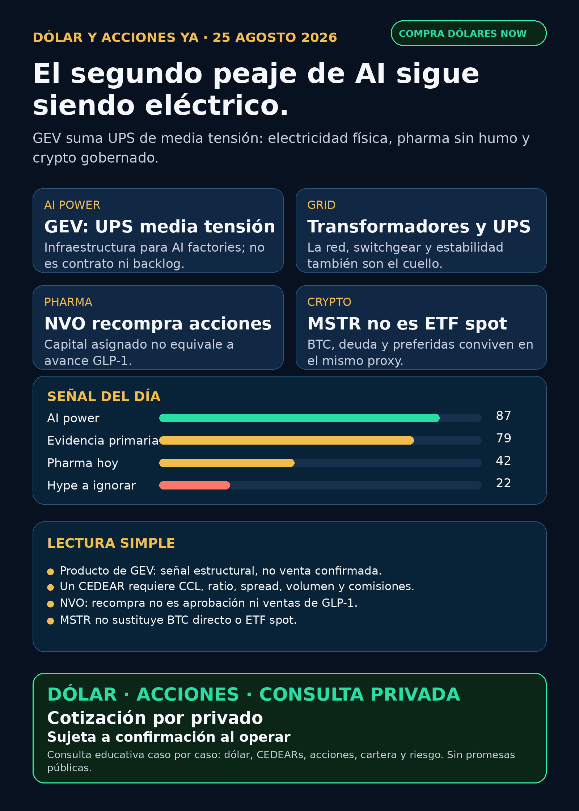

**Corte editorial:** lunes 25/08/2026, 08:45, Argentina. Fuentes verificables y datos públicos. No es asesoramiento financiero ni recomendación de compra/venta. **Cartera Ricardo:** liquidada, devuelta y terminada; no hay posiciones activas ni P&L que reportar.
Lectura simple del día
La señal que vale mirar hoy no es “más chips”: es la **electricidad que permite que una AI factory funcione sin caerse**. GE Vernova (`GEV`) publicó el 24/08 el lanzamiento de un UPS de media tensión orientado a AI factories e industrias de alta demanda eléctrica. Un UPS es el sistema que mantiene y ordena la energía cuando hay cortes, variaciones o picos: no es una GPU ni un contrato nuevo, pero sí una pieza del cuello de botella físico.
La lectura correcta es sobria: la señal **fortalece la tesis estructural de power hardware**, no prueba cliente, precio, backlog, margen ni ingresos nuevos. En criollo: AI necesita software y chips, pero también subestaciones, switchgear, transformadores, UPS, generación, cooling, permisos y capital. Una buena tesis de varios años no es una orden de compra para hoy.
El segundo aprendizaje es de método. Novo Nordisk (`NVO`) reportó recompras dentro de un programa vigente; es asignación de capital, no avance clínico de GLP-1. Y Strategy (`MSTR`) anunció una estructura de liquidez separada: sirve para entender por qué una empresa con Bitcoin en balance **no es un ETF spot**. Separar hechos evita hacer humo con titulares.
Argentina: dólar e instrumento antes que ticker
- **Referencias públicas, no puntas ejecutables de broker:** BlueLytics informó dólar blue compra/venta de **ARS 1.532,00 / ARS 1.565,00**, con actualización 2026-08-25T08:45:51.489708-03:00. Fuente: [BlueLytics](fuente).
- **MEP/CCL AL30 24h:** MEP **ARS 1.530,07** (24/08 16:59); CCL **ARS 1.545,05** (24/08 16:59), según [CriptoYa](fuente). Son referencias públicas: si el horario no es de rueda actual, hay que confirmar precio, plazo y punta en el broker antes de operar.
- **En criollo:** un CEDEAR es un certificado local que sigue a un activo de afuera; no es idéntico al ADR o a la acción global. Entre ambos están el CCL implícito, el ratio, el volumen, el spread y las comisiones.
- **Regla básica:** buena empresa ≠ buena inversión al precio actual ≠ buen instrumento local ≠ tamaño correcto para una cartera. Antes de una decisión humana faltan horizonte, monto, liquidez, riesgo, instrumento y broker.
Ranking educativo por calidad de señal — no es ranking de compra
1) GE Vernova / `GEV` — UPS de media tensión: el segundo peaje de AI sigue siendo eléctrico
- **Hecho disponible:** el 24/08 el publisher oficial de GE Vernova publicó “GE Vernova introduces medium-voltage UPS to help accelerate the buildout of AI factories and energy-intensive industries”.
- **Qué significa:** suma una capa entre la red y la carga del data center. En instalaciones de alto consumo, estabilidad de potencia, calidad eléctrica y continuidad operativa importan tanto como tener servidores.
- **Límite duro:** el cuerpo/canónica de la publicación no fue recuperable durante el corte. Por eso no afirmamos especificaciones, cliente, contrato, backlog, ingresos ni margen.
- **Accionable internacional/global:** `GEV` cotiza y queda **en radar / seguimiento**. Para analizar una compra humana faltan valuación, precio, horizonte, riesgo y liquidez.
- **Accionable local Argentina:** **proxy local imperfecto / acceso a verificar**. No se asume CEDEAR ni liquidez local; antes hay que confirmar disponibilidad, ratio, CCL, spread y comisiones.
- Fuente de discovery con publisher oficial: [Google News RSS / GE Vernova, 24/08/2026](fuente).
2) Novo Nordisk / `NVO` — recompra no es un catalizador de GLP-1
- **Hecho verificado:** el 6-K del 24/08 reporta operaciones semanales dentro del programa de recompra de hasta **DKK 15.000 millones** iniciado el 04/02/2026. El tramo iniciado el 06/05 puede recomprar hasta DKK 11.200 millones hasta el 01/02/2027.
- **Qué significa:** es asignación de capital y puede afectar cantidad de acciones; no prueba ventas, eficacia, aprobación, cobertura ni adopción del pipeline.
- **Estado:** `NVO` queda **en radar / vigilar**. Señal real, impacto limitado sobre la tesis clínica/comercial.
- **Accionable global:** cotiza; no implica compra. **Local Argentina:** instrumento/CEDEAR, liquidez y CCL pendientes de confirmar.
- Fuente primaria: [SEC 6-K / Novo Nordisk, 24/08/2026](fuente).
3) Strategy / `MSTR` — proxy crypto complejo, no Bitcoin directo
- **Hecho verificado:** Strategy creó el pool “USD Cash” dentro de su Digital Credit Capital Framework. Puede usarse para BTC, dividendos/intereses, recompras o deuda. Al 23/08 reportó 840.447 BTC y cero compras/ventas de BTC en la semana 17–23/08; recompró 1.431.212 acciones preferidas `STRC` por USD 136,4 millones.
- **Qué significa:** el accionista de `MSTR` asume una empresa con deuda, preferidas y decisiones de management; no posee BTC específicos. El FWP de la compañía aclara que no es ETF spot.
- **Estado:** **radar educativo / vigilar**. No es recomendación ni exposición directa a Bitcoin.
- **Accionable global:** instrumento público existente, pero complejo. **Argentina:** proxy local imperfecto / acceso y liquidez a verificar; no mezclarlo con una compra directa de BTC, ETF spot o stablecoin.
- Fuentes primarias: [SEC 8-K / Strategy, 24/08/2026](fuente) · [SEC FWP](fuente).
Watchlist base — seguimiento rápido
- **Revisados sin filing operacional primario nuevo y material:** `RKLB`, `NVDA`, `PLTR`, `TSM`, `MU`, `GOOGL/GOOG`, `AAPL`, `HOOD`, `TSLA`, `ASML`, `AVGO` y `CBRS`. Los Forms 4 de `NVDA`/`PLTR` no cambian por sí solos la tesis de negocio.
- **`SNDK`:** el CIK del collector devolvió 404. Es una limitación de identidad del collector, no una conclusión sobre la empresa; queda para auditoría de proceso.
- **Oro:** `GLD`, `GOLD` y `B` no son el mismo objeto. Sin instrumento exacto no corresponde informar precio, rendimiento ni tesis.
- **`RVI`:** sin actualización primaria contemporánea de NAV/premium, volumen, fees, fact sheet y acceso Argentina. **Vigilar; no accionable por ahora.**
- **Alibaba / `BABA`:** el intake de Charly sigue vigente: la primaria HKEX prueba una **propuesta** de financiación por HK$80.000 millones para AI full-stack e infraestructura, no una operación cerrada. CEDEAR `BABA` y ratio 9:1 fueron verificados previamente por Comafi/IOL; aún faltan rueda, spread, CCL y costos para hablar de ejecución. Fuente: [HKEX / Alibaba](fuente).
Energía: global, power hardware y Argentina
- **`GEV`:** única señal nueva de la ventana, con alcance limitado a producto/título recuperable. No confundir producto con backlog.
- **Utilities/generación:** `NEE`, `D`, `VST`, `CEG`, nuclear y uranio revisados sin contrato, guidance, resultado o decisión regulatoria primaria nueva que transforme demanda AI en ingresos materiales.
- **Transformadores y power hardware:** Hitachi/Hitachi Energy, Siemens Energy (`ENR.DE`, no Siemens AG), HD Hyundai Electric (`267260.KS`), Hyosung (`298040.KS`), `ETN`, `PWR`, `HUBB`, `VRT` y `MOD` revisados sin pedido, backlog, capex o resultado primario fresco. Virginia Transformer y Delta Star son privadas: **no accionables directo**.
- **Energéticas argentinas:** `YPF`, `PAM/PAMP`, `TGS`, `CEPU` y `VIST` revisadas sin señal primaria nueva fuerte. Son radar educativo; antes de operar localmente faltan cotización viva, volumen, spread, instrumento, CCL y comisiones.
Pharma y salud
- `NVO`: recompra verificada; no convertirla en novedad de pipeline.
- `LLY`, `PFE`, `MRK`, `AZN`, `REGN` y `AMGN`: revisadas sin aprobación, Phase III, M&A, guidance, patente o hito regulatorio primario fresco que cambie materialmente el mapa.
- El posible test sanguíneo de Alzheimer Roche/Lilly levantado por RSS no tuvo decisión FDA/registro/comunicado de emisor recuperable: **NO VERIFICADO / auditoría**.
- En GLP-1, aprobación, lanzamiento, cobertura, ventas y outcomes clínicos son etapas distintas. No se intercambian como si fueran lo mismo.
Radar amplio — recibo de cobertura
- **Defensa / guerra física / aerospace industrial:** `AVAV`, `GE`, `RTX`, `LMT`, `NOC`, `GD`, `HWM`, `KTOS`, `BA`, `ITA` y `XAR` revisados. Sin contrato DoD/empresa, backlog, margen, presupuesto adjudicado o guidance primario nuevo. **Revisado sin señal fuerte.**
- **Space / orbital AI:** `RKLB`, SpaceX/SPCX y vehículos indirectos revisados; sin nuevo filing, términos de financiación o fuente primaria de negocio que pase el umbral. **Auditoría / no accionable directo por ahora.**
- **Autonomía / physical AI:** Waymo/Alphabet, Tesla, Uber, Zoox/Amazon y Joby revisados sin métrica primaria nueva de flota, permisos, ingresos o despliegue. **Revisado sin señal fuerte.**
- **Fintech / AI agents:** sin primaria contemporánea de producto o métricas con impacto material. Agentes de trading se miran con paper/read-only, ledger, límites y aprobación humana; no como promesa de rendimiento.
- **Crypto gobernado:** `MSTR` es el caso educativo verificable. `DXYZ`, `VCX`, `ARKVX`, `AGIX`, `XOVR`, `FAPMI/Forge` y `RVII` no tienen paquete contemporáneo verificable de listing, holdings, NAV, premium/descuento, fees, volumen y acceso: **NO ACCIONABLE / NO VERIFICADO.**
Red flags para ignorar
1. **Producto nuevo no es contrato:** el UPS de `GEV` fortalece el mapa de infraestructura, pero no prueba ventas o backlog.
2. **Recompra no es breakthrough clínico:** `NVO` recomprando acciones no equivale a nueva aprobación, cobertura o ventas GLP-1.
3. **MSTR no es ETF spot:** BTC en balance no elimina deuda, preferidas ni riesgo corporativo.
4. **Propuesta BABA no es cierre:** no contar fondos como recibidos ni términos de mercado como definitivos hasta que la primaria lo confirme.
5. **Ticker global no es ejecución argentina:** CEDEAR, CCL, ratio, volumen, spread y comisiones cambian la experiencia real.
Qué mirar después
1. GE Vernova: URL primaria completa, especificaciones, clientes, backlog y alcance económico del UPS de media tensión.
2. `GEV`, Hitachi, Siemens Energy, HD Hyundai y Hyosung: pedidos, lead times, interconexión y resultados que prueben monetización del cuello eléctrico.
3. `NVO` y `LLY`: aprobación, lanzamiento, cobertura, ventas y outcomes; no reciclar eventos viejos.
4. `MSTR`: composición de capital, deuda/preferidas y diferencia contra exposición BTC directa o ETF.
5. Argentina: MEP/CCL, instrumento local, liquidez y costos antes de pasar de “radar” a análisis humano.
Servicio privado
**Dólar · Acciones · Consulta privada.** Si querés ordenar dólar, CEDEARs, acciones, plazo y riesgo, escribime por privado y lo vemos caso por caso. Cotización sujeta a confirmación al momento de operar.
**Disclaimer:** este reporte es research educativo para decisión humana. No es asesoramiento financiero personalizado ni recomendación de compra o venta.